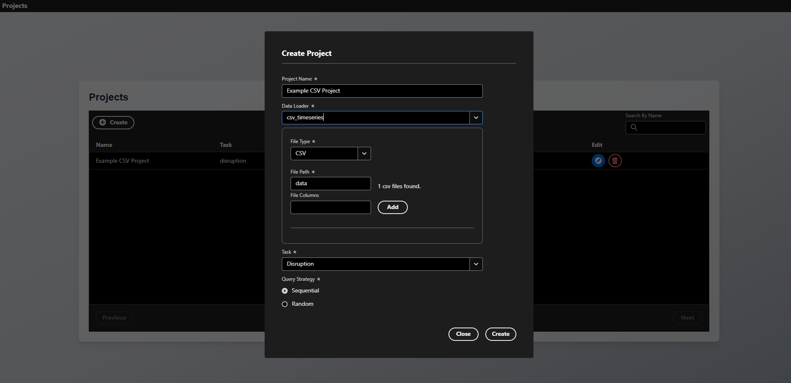
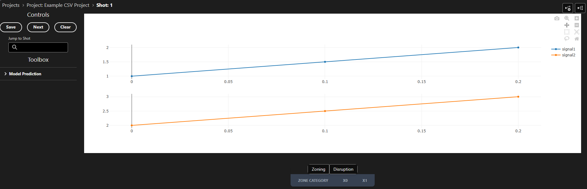

Custom Data Loaders
Data loaders are the bridge between your data sources and TokTagger's annotation interface. They define how to retrieve and format data for visualization and annotation. TokTagger comes with built-in loaders for common formats (images, Parquet files, UDA), but you can easily create custom loaders for your specific data sources.
Overview
A data loader is responsible for:
- Defining the expected sample data format (e.g., shot IDs with signal names, file paths)
- Retrieving the actual data from your data source
- Converting the data into TokTagger's standardized format for visualization
Creating a Custom Data Loader
Step 1: Import Required Components
from toktagger.api.core.data_loaders import DataLoader, LoaderRegistry
from toktagger.api.schemas.data import Data, MultiVariateTimeSeriesData, TimeSeriesData
from toktagger.api.schemas.samples import ShotData, FileData, TimeSeriesFileData
from typing import Type
import pydantic
Step 2: Define Your Data Loader Class
Create a class that inherits from DataLoader and implement the required methods:
@LoaderRegistry.register("my_custom_loader")
class MyCustomLoader(DataLoader):
"""DataLoader for retrieving data from my custom data source"""
def __init__(self, params):
# Initialize your data source connection here
# For example: database connection, API client, etc.
super().__init__(params)
@classmethod
def sample_data_type(cls) -> Type[ShotData | FileData | TimeSeriesFileData]:
"""Define what type of sample data this loader expects"""
return ShotData # or FileData, or TimeSeriesFileData
@pydantic.validate_call
def get_sample(self, shot_id: int, sample_data: ShotData) -> Data:
"""
Retrieve and return data for a specific sample.
Args:
shot_id: Unique identifier for the sample
sample_data: Sample-specific configuration (signal names, file paths, etc.)
Returns:
Data object in TokTagger format
"""
# Your implementation here
pass
Step 3: Register the Loader
The @LoaderRegistry.register("my_custom_loader") decorator automatically registers your loader with TokTagger. The name you provide becomes the identifier used in project configurations.
Step 4: Run Server with Custom Loader
If you have added your own data loaders, you must make sure they have been loaded before the server is run. You can run the server from within a Python script by initializing the Server class, and running server.run(). For example, your script for adding a data loader and running the server may look like this:
from toktagger.api.core import DataLoader, LoaderRegistry, Server
from toktagger.api.schemas.samples import Sample
from toktagger.api.schemas.data import TimeSeriesData
# Say we have a python module which can load data from our Tokamak's data backend:
import my_tokamak_data_backend
# Decorate your class using the Loader Registry,
# providing a string which you want to refer to your data loader as:
@LoaderRegistry.register("my_tokamak")
class MyDataLoader(DataLoader):
def get_sample(self, sample: Sample) -> TimeSeriesData:
# Here you add the logic for how to obtain the data for your given sample
loaded: dict = my_tokamak_data_backend.get(
shot_id = sample.shot_id,
signal_name = sample.signal_names[0]
)
# Format it into the Data schema which you want to use
# For example, if we are loading time series data:
return TimeSeriesData(
time=loaded["time"],
values=loaded["values"]
)
# Create and run a server in the same file,
# so that your data loader is correctly added to the registry:
server = Server()
server.run()
Data Types and Schemas
Sample Data Types
Choose the appropriate sample data type for your loader:
ShotData
For shot-based data sources (like UDA, databases):
class ShotData(BaseModel):
protocol: Literal["uda", "sal"]
signal_names: list[str] # List of signals to retrieve
Use when: Data is identified by shot number and signal names.
FileData
For file-based data sources (images, videos):
class FileData(BaseModel):
file_name: str # Path to file or directory
type: FileType # e.g., "png", "jpeg", "mp4"
protocol: Literal["file", "s3"] # "file" or "s3"
Use when: Data is stored in individual files with different types.
TimeSeriesFileData
For time series files (Parquet, CSV, NetCDF):
class TimeSeriesFileData(FileData):
signal_names: Optional[list[str]] = None # Optional signal filter
Use when: Files contain time series data with multiple signals.
Return Data Types
Your get_sample() method should return one of these data types:
ImageData
For image-based visualization:
class ImageData(Data):
frame: int # Frame number or identifier
values: str # Base64-encoded image string
TimeSeriesData
For single signal time series:
class TimeSeriesData(Data):
time: list[float] # Time values
values: list[float] # Signal values
MultiVariateTimeSeriesData
For multiple signals (most common for fusion diagnostics):
class MultiVariateTimeSeriesData(Data):
values: dict[str, TimeSeriesData | None] # Signal name -> data
SpectrogramData
For frequency-time representations:
class SpectrogramData(Data):
time: list[float]
frequency: list[float]
amplitude: list[list[float]] # 2D array
Complete Example: CSV Time Series Loader
Here's a complete example of a custom loader for CSV time series files:
import pandas as pd
import pathlib
from typing import Type
import pydantic
from toktagger.api.core.data_loaders import DataLoader, LoaderRegistry
from toktagger.api.schemas.data import MultiVariateTimeSeriesData, TimeSeriesData
from toktagger.api.schemas.samples import TimeSeriesFileData
@LoaderRegistry.register("csv_timeseries")
class CSVTimeSeriesLoader(DataLoader):
"""DataLoader for retrieving time series data from CSV files"""
@classmethod
def sample_data_type(cls) -> Type[TimeSeriesFileData]:
# This loader expects file paths with optional signal names
return TimeSeriesFileData
@pydantic.validate_call
def get_sample(
self,
shot_id: int,
sample_data: TimeSeriesFileData
) -> MultiVariateTimeSeriesData:
"""
Load time series data from a CSV file.
Expected CSV format:
- First column: time values
- Remaining columns: signal values with column headers
"""
# Verify file exists
file_path = pathlib.Path(sample_data.file_name)
if not file_path.exists():
raise FileNotFoundError(
f"Could not find CSV file at '{file_path}'"
)
# Read CSV file
df = pd.read_csv(file_path, index_col=0) # First column is time
# Filter to requested signals if specified
if sample_data.signal_names:
df = df[sample_data.signal_names]
# Handle missing values
df = df.fillna(0)
# Extract time values from index
time = df.index.values.tolist()
# Convert each column to TimeSeriesData format
results = {}
for column_name in df.columns:
results[column_name] = TimeSeriesData(
time=time,
values=df[column_name].values.tolist()
)
return MultiVariateTimeSeriesData(values=results)
This examples assumes the CSV file has the following format:
- First column: time values
- Remaining columns: signal values with column headers
The file should be called {shot_id}.csv.
For example:
time,signal1,signal2
0.0,1.0,2.0
0.1,1.5,2.5
0.2,2.0,3.0
Running the Example
To run the example above and create a custom CSV dataloader:
- Copy the code above into a file called
loader.py - Make a file to run the server called
run.py, which does:
from loader import CSVTimeSeriesLoader
from toktagger.api.main import Server
server = Server()
server.run()
- Create a directory which will contain your data called
data, and then copy the CSV above into a file named1.csvwithin the new directory - Run
python run.py - Open the UI in your browser at
localhost:8002/ui/projects - Click the
Createbutton on the UI, and click theData Loaderdropdown. You should see your new data loader listed there, calledcsv_timeseries. - After selecting the custom data loader, set the file path as
data- the UI should tell you that a file has been found within that directory. Fill in the other information, including project name and task as shown below, and pressCreate:

- You should now be able to open the sample which we have created, corresponding to our CSV file. You should see two time series plots containing the data from our CSV file:

Example: Database Loader
Here's an example of loading data from a SQL database:
import sqlalchemy as sa
from typing import Type
import pydantic
from toktagger.api.core.data_loaders import DataLoader, LoaderRegistry
from toktagger.api.schemas.data import MultiVariateTimeSeriesData, TimeSeriesData
from toktagger.api.schemas.samples import ShotData
@LoaderRegistry.register("sql_database")
class SQLDatabaseLoader(DataLoader):
"""DataLoader for retrieving data from a SQL database"""
def __init__(self, params):
# Initialize database connection
# Connection string should be in environment variable
import os
connection_string = os.environ.get("DATABASE_URL")
self.engine = sa.create_engine(connection_string)
super().__init__(params)
@classmethod
def sample_data_type(cls) -> Type[ShotData]:
return ShotData
@pydantic.validate_call
def get_sample(
self,
shot_id: int,
sample_data: ShotData
) -> MultiVariateTimeSeriesData:
"""Load time series data from database"""
results = {}
with self.engine.connect() as conn:
for signal_name in sample_data.signal_names:
# Query time series data for this shot and signal
query = sa.text("""
SELECT time, value
FROM timeseries_data
WHERE shot_id = :shot_id AND signal_name = :signal_name
ORDER BY time
""")
result = conn.execute(
query,
{"shot_id": shot_id, "signal_name": signal_name}
)
rows = result.fetchall()
if rows:
time = [row[0] for row in rows]
values = [row[1] for row in rows]
results[signal_name] = TimeSeriesData(time=time, values=values)
else:
results[signal_name] = None
return MultiVariateTimeSeriesData(values=results)
Using Docker
If you are using the docker compose option to run the server, you can provide a custom script similar to the one above to add your own data loaders. To do this, create a file similar to the one above, but making sure to pass the following arguments into server.run():
server.run(
host="0.0.0.0",
port=8002
)
You can then provide the path to your script when running docker compose. For example, say we have the above script in a file called custom_toktagger.py - We simply need to add CUSTOM_SCRIPT=./custom_toktagger.py before the docker compose command!
CUSTOM_SCRIPT=./custom_toktagger.py docker compose --env-file .env.dev -f docker-compose.dev.yml up --build
Tip
Make sure you provide the path to your script, and not a string.
e.g, provide CUSTOM_SCRIPT=./custom_toktagger.py, and not CUSTOM_SCRIPT=custom_toktagger.py.